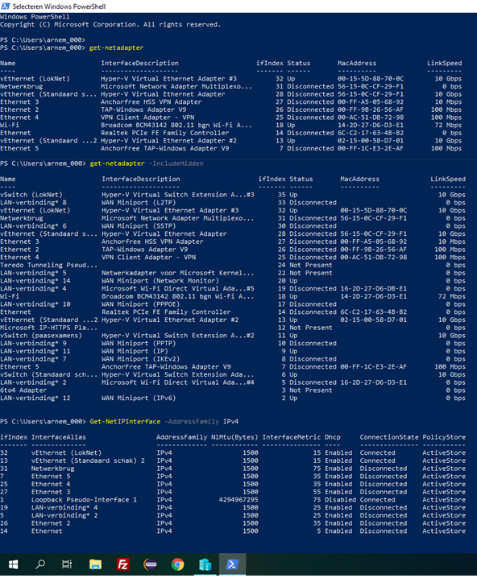

OVERZICHT HOST-CONFIGURATIE
Router configureren
LokNet is een interne switch. Deze verbindt de router met een client (LAN). De router is ook verbonden met de Standaard schakeloptie. Op deze manier kan de router verbinding maken met het internet (WAN). Hieronder ziet u dat het daardoor mogelijk is om te pingen naar een server via het internet.
CLIENT CONFIGURATIE

Vervolgens hebben we ingesteld dat de client (die via de switch ‘LokNet’ verbonden is) automatisch een IP-adres en een DNS-server laat toewijzen. Vervolgens voerden we in PowerShell het commando ‘ipconfig /all’ uit en viel op dat het IPv4 adres waren gewijzigd. De client had namelijk een DHCP-server gevonden en heeft zich hiermee geconnecteerd.
Nu heeft de client dankzij de router (die aangesloten is met de standaard schakeloptie) internetverbinding. Dit kunnen we testen met ping.
We kunnen nu ook via de client de instellingen van de router wijzigen:
TWITTER-EXPERIMENT
Er werd gelogd wanneer ik verbond met 104.244.42.1:

Instellingen hiervoor:
Ik kon niet meer verbinden met 104.244.42.1:

Instellingen hiervoor:
LOKSERV TOEGEVOEGD
Eerst heb ik een privé-switch aangemaakt, met de naam ‘LokServ’. Deze heb ik gekoppeld aan de router en aan een nieuwe WinServ.
Vervolgens heb ik bij deze nieuwe WinServ de eigenschappen aangepast van IPv4 zodat deze een statisch IP-adres heeft.
Nadien heb ik op de WinClient de interface ‘LokServ’ toegevoegd.
Vervolgens heb ik de firewall-rules ingesteld voor de nieuwe interface ‘LokServ’.
Tenslotte had ik internet op de WinServ.
EXTRA: EEN NAS
Om een gedeelde map te maken op de WinServ, die beschikbaar is op de WinClient heb ik eerst een nieuwe 'Storage Pool' toegevoegd in 'Server Manager' nadat ik eerst een virtuele harde schijf had toegevoegd in 'Hyper-V' aan de WinServ.
Vervolgens maak ik een nieuwe 'Virtual Disk'.
Nu maak ik een 'New Volume'.
Nadien maakte ik een nieuwe share.
Tenslotte geef ik de Administrators alle rechten in deze share.
Ik kan nu bestanden bewerken vanaf mijn WinClient in deze gesharede map van de WinServ.